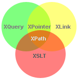

From http://www.w3schools.com (Copyright Refsnes Data)
XPath is a language for finding information in an XML document.
Before you continue you should have a basic understanding of the following:
If you want to study these subjects first, find the tutorials on our Home page.
|  |
|
XPath uses path expressions to select nodes or node-sets in an XML document. These path expressions look very much like the expressions you see when you work with a traditional computer file system.
XPath includes over 100 built-in functions. There are functions for string values, numeric values, date and time comparison, node and QName manipulation, sequence manipulation, Boolean values, and more.
XPath is a major element in the XSLT standard. Without XPath knowledge you will not be able to create XSLT documents.
You can read more about XSLT in our XSLT tutorial.
XQuery and XPointer are both built on XPath expressions. XQuery 1.0 and XPath 2.0 share the same data model and support the same functions and operators.
You can read more about XQuery in our XQuery tutorial.
XPath became a W3C Recommendation 16. November 1999.
XPath was designed to be used by XSLT, XPointer and other XML parsing software.
To read more about the XPATH activities at W3C, please read our W3C tutorial.
From http://www.w3schools.com (Copyright Refsnes Data)